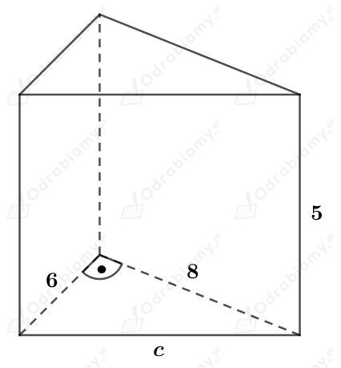
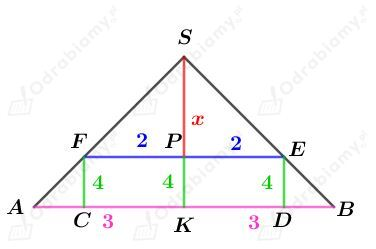
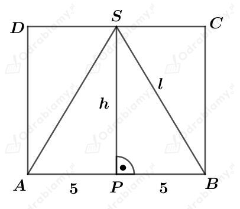
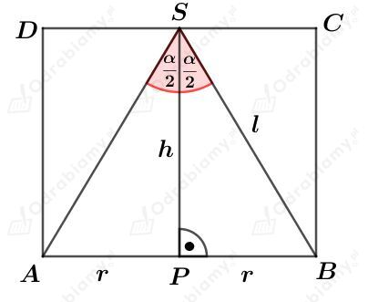
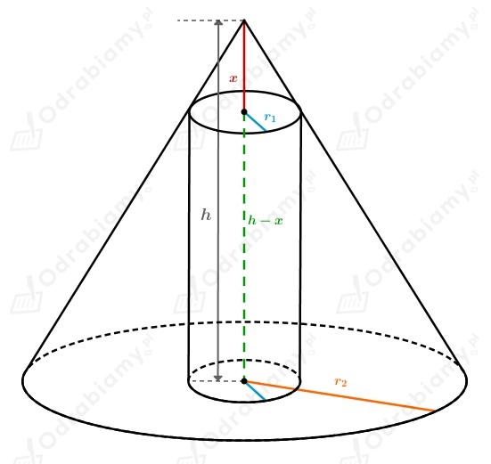
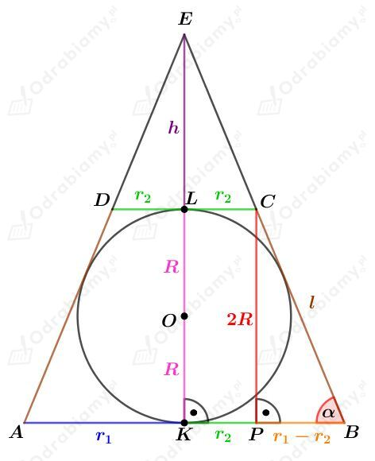
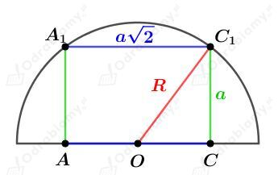
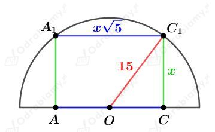

Dany jest graniastosłup prawidłowy sześciokątny.
Walec wpisany i opisany na tym graniastosłupie ma wysokość równą wysokości H tego graniastosłupa.
Niech a będzie długością krawędzi podstawy tego graniastosłupa.
Aby obliczyć promień walca opisanego w ten graniastosłup oraz walca wpisanego w ten graniastosłup narysujmy przekrój tych brył widziany z góry:
Promień r walca wpisanego w ten graniastosłup ma długość równą długości wysokości trójkąta równobocznego o boku długości a. Mamy:
Promień walca opisanego na tym graniastosłupie ma długość krawędzi podstawy tego graniastosłupa. Mamy:
Obliczmy objętość walca wpisanego w ten graniastosłup. Mamy:
Obliczmy objętość walca opisanego na tym graniastosłupie. Mamy:
Wyznaczmy stosunek objętości walca opisanego na tym graniastosłupie do objętości walca w niego wpisanego. Mamy:
Dany jest prostopadłościan, którego podstawa jest kwadratem o boku długości a i o wysokości długości H.
Wiedząc, że pole powierzchni całkowitej tego prostopadłościanu wynosi 16 mamy:
W podany prostopadłościan wpisano walec.
Wysokość tego walca ma długość równą długości wysokości prostopadłościanu, a promień jego podstawy ma długość 1/2a.
Obliczmy pole powierzchni całkowitej tego walca. Mamy:
Dany jest graniastosłup przedstawiony na rysunku:

Obliczmy długość przeciwprostokątnej c. Korzystając z twierdzenia Pitagorasa mamy:
a)
Na tym graniastosłupie opisano walec. Długość wysokości tego walca również jest równa 5.
Promień R podstawy tego walca jest równy długości promienia okręgu opisanego na trójkącie prostokątnym będącym podstawą tego graniastosłupa. Mamy więc:
Obliczmy objętość tego walca. Mamy:
b)
W ten graniastosłup wpisano walec. Długość wysokości tego walca również jest równa 5.
Promień r podstawy tego walca jest równy długości promienia okręgu wpisanego w trójkąt prostokątny będący podstawą tego graniastosłupa. Mamy więc:
Obliczmy objętość tego walca. Mamy:
Dany jest stożek o promieniu podstawy długości 3 i wysokości długości H.
Dany jest walec o promieniu podstawy długości 2 i wysokości długości 4.
W podany stożek wpisano ten walec.
Rysunek:

Korzystając z podobieństwa trójkątów KBS i PES otrzymujemy:
Zatem:
Obliczmy objętość tego stożka. Mamy:
Dany jest walec o promieniu podstawy długości 5 i wysokości długości h.
W ten walec wpisano stożek o promieniu podstawy długości 5, tworzącej długości l i wysokości długości h.
Rysunek:

Powierzchnia boczna tego stożka po rozwinięciu jest połową koła. Mamy stąd:
Korzystając z twierdzenia Pitagorasa dla trójkąta PBS mamy:
Wyznaczmy pole powierzchni całkowitej tego walca. Mamy:
W walec wpisano stożek.
Rysunek:

Pola powierzchni bocznych tych brył są równe. Zapiszemy więc:
Wyznaczmy cosinus kąta 𝛼/2. Mamy:
Zatem
czyli
Rysunek:

Oznaczmy jako
r1 - promień podstawy walca - mniejszej "podstawy stożka"
r2 - promień podstawy większej stożka
h - wysokość dużego stożka
x - wysokość stożka który został odcięty
Z treści zadania wiemy, że
Z podobieństwa trójkątów zachodzi również
Obliczmy objętość stożka ściętego. Jest to objętość dużego stożka pomniejszona o objętość stożka który został ucięty.
Obliczmy objętość walca:
Stosunek objętości
Dany jest stożek ścięty o promieniach podstawy długości r1 i r2 oraz o tworzącej długości l.
W podaną bryłę można wpisać kulę o promieniu długości R.
Naszkicujmy przekrój:

Trapez ABCD jest trapezem równoramiennym, w którym można wpisać okrąg. Mamy stąd:
Korzystając z twierdzenia Pitagorasa dla trójkąta PBC otrzymujemy:
Korzystając z podobieństwa trójkątów KBE i LCE otrzymujemy:
Z treści zadania wiemy, że objętość danej kuli jest cztery razy mniejsza od objętości tego stożka ściętego. Mamy stąd:
Podstawiając wcześniej wyznaczone h mamy:
Podstawiając wcześniej wyznaczone R mamy:
Obie strony równości są dodatnie, więc mamy:
Wyznaczmy sinus kąta 𝛼. Mamy:
Naszkicujmy przekrój przechodzący przez przekątną podstawy sześcianu:

Korzystając z twierdzenia Pitagorasa dla trójkąta OCC1 otrzymujemy:
Wyznaczmy objętość tego sześcianu. Mamy:
Dany jest prostopadłościan, który ma osiem krawędzi długości x i cztery krawędzie długości 2x.
Podany prostopadłościan zawarty jest w półkuli o promieniu długości 15.
Przypadek I
Podstawą tego prostopadłościanu jest kwadrat o boku długości x, a wysokość tego prostopadłościanu ma długość 2x.
Rysunek:
Korzystając z twierdzenia Pitagorasa dla trójkąta OCC1 mamy:
Wyznaczmy objętość tego prostopadłościanu. Mamy:
Przypadek II
Podstawą tego prostopadłościanu jest prostokąt o bokach długości x i 2x, a wysokość tego prostopadłościanu ma długość x.
Wyznaczmy długość c przekątnej podstawy. Korzystając z twierdzenia Pitagorasa mamy:
Rysunek:

Korzystając z twierdzenia Pitagorasa dla trójkąta OCC1 mamy:
Wyznaczmy objętość tego prostopadłościanu. Mamy:
Większą objętość otrzymamy w przypadku II.
Największa możliwa objętość tego prostopadłościanu wynosi 2000.